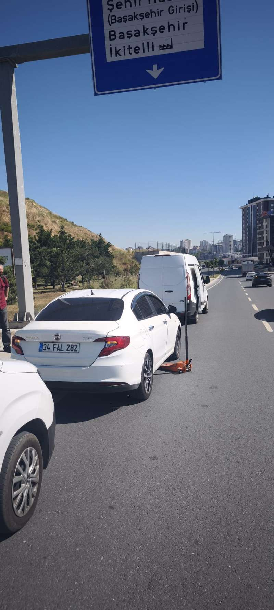

Sıfır ve ikinci el lastik satışı, yerinde lastik tamiri ve balans ayarı. Yolda kaldığınızda profesyonel ekibimizle anında yanınızdayız.
Başakşehir'de 15 yılı aşkın süredir oto lastik sektöründe güvenilir ve kaliteli hizmet anlayışıyla faaliyet gösteriyoruz. Müşteri memnuniyetini ön planda tutarak, güvenli sürüş deneyimi için ihtiyaç duyulan tüm lastik çözümlerini tek çatı altında sunuyoruz.

Yolda kaldığınızda saat kaç olursa olsun, 15-20 dakika içinde yanınızdayız. Profesyonel ekibimiz tüm durumları çözmek için hazırdır.
Sıfır ve ikinci el lastik satışı, yerinde lastik tamiri ve balans ayarı hizmetleri sunuyoruz. Tüm işlemler uzman kadromuz tarafından yapılır.
Lastik dengesi için profesyonel balans ayarı hizmetimiz, araçınızın sürüş konforunu ve güvenliğini maksimum seviyeye çıkarır.
Sıfır ve ikinci el lastiklerimiz kontrol edilmiş ve kaliteli. Tüm satın alımlarda garanti desteği sağlanır.
"Gece saat 3'te yolda kaldım, yarım saat içinde gelip lastiğimi tamir ettiler. Çok profesyonel ve hızlılar."
"Sıfır lastik alırken çok yardımcı oldular. Fiyatları piyasaya göre oldukça uygun. Tavsiye ederim."
"İşini titizlikle yapan bir ekip. Balans ayarı sonrası aracımın sürüş konforu belirgin şekilde arttı."
Aykosan San. Sit. merkezli olmak üzere tüm İkitelli OSB, Kayaşehir, Halkalı ve çevresindeki ilçelere 7/24 hizmet vermekteyiz.
Trafik durumuna bağlı olarak ortalama 15-20 dakika içerisinde konumunuza ulaşıyoruz.
Evet, sattığımız tüm ikinci el lastikler uzman ekibimiz tarafından kontrol edilir ve belirli bir süre kullanım garantisi sunulur.
Müşterilerimizin yolda kalma stresini en aza indirmek için modern ekipmanlarımız ve uzman kadromuzla yanınızdayız.